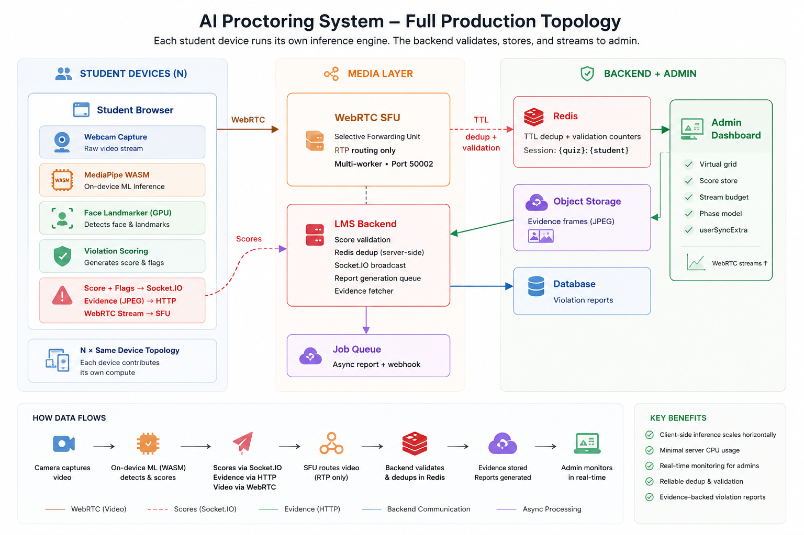
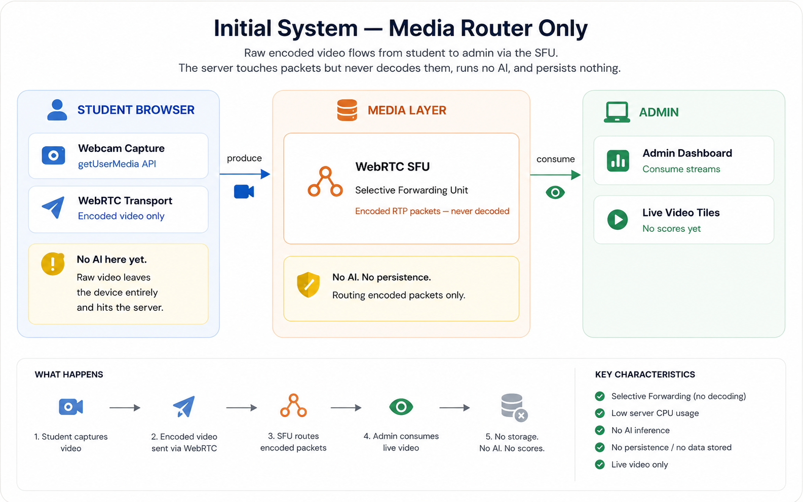
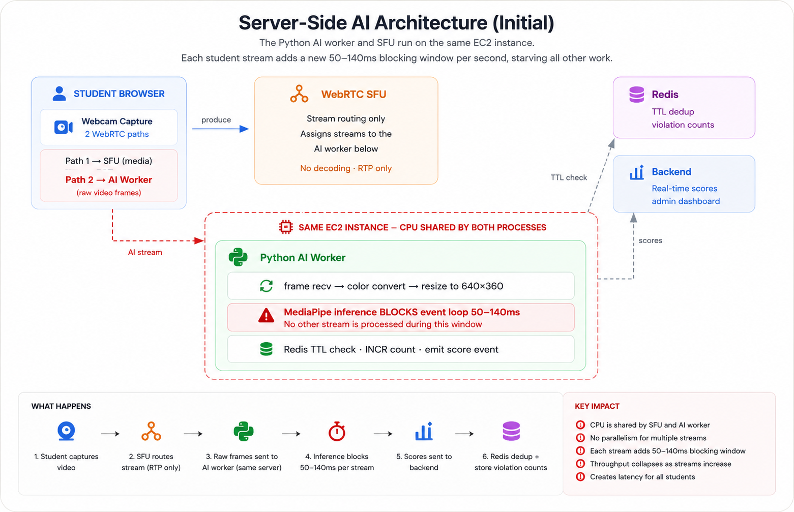
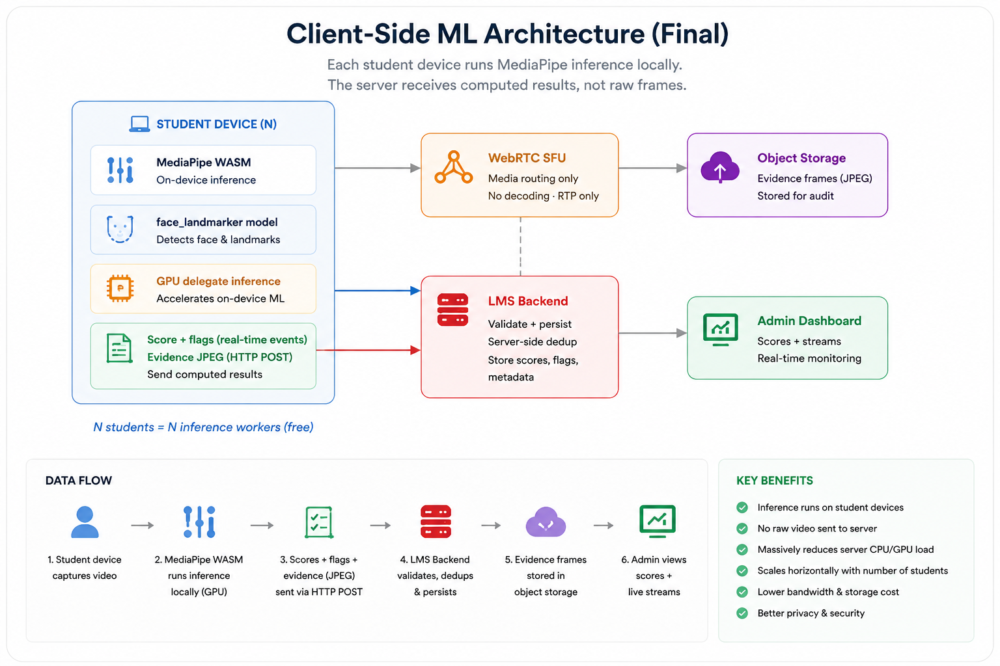

There is a particular kind of failure that only reveals itself under real load. The architecture looks clean on a whiteboard, the tests pass, and the demo goes smoothly. Then five students join an online exam simultaneously, and your server's CPU climbs to one hundred percent and stays there.
This is the story of building a video proctoring system for a live learning platform — from a single WebRTC node handling a handful of streams, to a server-side Python AI worker drowning under the weight of its own ambition, to a fundamental rethink that moved the intelligence from the server into each student's browser using WebAssembly. It covers what broke, why it broke, and the decisions that came out of each failure.
I am writing this not because everything went perfectly, but because everything that went wrong taught something worth passing on. If you are building real-time video infrastructure with AI on top of it, the hard parts are not the ones in the documentation.
Full System Topology
Before diving into each failure and fix, here is the complete production architecture as it stands today — after all the refactors described in this post. This is the reference frame for everything that follows.

01 — The Origin: What We Were Actually Building
Online exams have an integrity problem. When students sit assessments from home, the absence of a physical invigilator creates obvious opportunities for dishonesty. The solution the industry has converged on is video proctoring — software that captures the student's webcam, analyses the video stream for suspicious behaviour, and alerts an invigilator in real time.
The brief was straightforward in description and terrifying in practice: build a system that captures video from hundreds of concurrent exam sessions, runs AI inference on each stream to detect violations such as multiple faces, gaze deviation, camera blackouts and low-quality feeds, maintains a real-time score visible to admins watching a live dashboard, stores evidence frames for review, and triggers immediate warning popups to students when violations are confirmed.
The system needed to detect eight distinct violation types, each with its own severity weighting and TTL for deduplication. The final proctoring score needed to be a tiered model with hard caps per severity band — not just a raw sum — because the difference between "looked away twice" and "had someone else sit the exam" matters enormously in how you act on the data.
02 — The Streaming Server: Learning the SFU the Hard Way
The first version of the system was not a proctoring system. It was a WebRTC router. Before you can analyse a video stream, you have to receive it reliably, and WebRTC is not the kind of technology that tolerates naïve implementations.
A Selective Forwarding Unit sits between producers (students with webcams) and consumers (admins watching tiles) and routes encoded media without decoding it. This is the right architecture for video conferencing at scale: decoding and re-encoding on the server is expensive, and an SFU avoids it entirely. But an SFU has a learning curve that is almost entirely about state management.
The initial implementation was what you would expect from a first attempt. One worker, one router, in-memory maps for transports, producers, consumers, and a pending consumer queue for the race condition where an admin tries to subscribe to a stream that has not been produced yet. The signaling flow was a series of socket events: join, get capabilities, create transport, connect transport, produce, consume.

The first real lesson came from the race condition inherent in WebRTC session setup. An admin loading the live dashboard might try to consume a student's stream before the student's produce call has completed — or, more insidiously, before the SFU has acknowledged it and propagated the producer ID. The pending consumer queue was the fix: store the consume request, and fulfil it the moment the producer materialises.
The second lesson came from transport lifecycle. SFU transports are stateful objects that must be explicitly connected, explicitly produced, and explicitly closed. Forgetting to close a transport on disconnect does not crash anything immediately. It leaks state quietly until you run out of file descriptors or memory. In-memory maps have to be cleaned up on socket disconnect, and that cleanup has to happen before any reconnect logic runs, not after.
03 — Adding Intelligence: Server-Side AI With MediaPipe
Once the WebRTC routing was stable, the AI layer was built on top of it. The design was architecturally clean and computationally naive: a Python process would receive each student's video stream via a secondary WebRTC path, sample frames at 1 FPS, run MediaPipe inference on each frame to detect violations, and emit scores back over a real-time channel.
The signaling was a second WebSocket connection from the student browser, separate from the SFU signaling path. The student connected to a dedicated proctoring endpoint, sent an identity payload containing their student ID, quiz ID, and producer ID, and then completed a standard WebRTC offer-answer exchange with the Python process. The Python worker opened a receive-only peer connection, accepted the student's video track, and began pulling frames.

The Frame Processing Pipeline
For every frame the Python worker processed, the pipeline looked like this. First, the runtime delivered a raw video frame from the WebRTC receive track. That frame was converted from YUV to BGR, resized to 640×360, and passed to the MediaPipe analysis pipeline. MediaPipe ran face detection first, then face mesh if a face was found, then gaze angle calculation from the facial landmarks. The result was a set of violation flags and a suspicion score.
# Every frame pulled from the track went through this path. # The critical insight: get_comprehensive_analysis() is BLOCKING. # While it runs, no other stream can be processed. while not stop_token.is_set(): frame = await track.recv() bgr = _video_frame_to_bgr(frame) # YUV → BGR + resize # 1 FPS gate: skip 4 of every 5 frames user_frame_counters[student_id] += 1 if user_frame_counters[student_id] % PROCESS_EVERY_N_FRAMES != 0: continue # This call blocks the event loop for 50–140ms analysis = await asyncio.to_thread( engine.get_comprehensive_analysis, bgr ) # For each violation detected: 2 Redis calls + optional upload for flag in analysis['flags']: exists = await check_short_violation_key(quiz_id, student_id, flag) if not exists: await create_short_violation_key(quiz_id, student_id, flag, ttl) await increment_violation_count(quiz_id, student_id, flag) asyncio.create_task(process_faulty_frame(bgr.copy(), ...))
The frame sampling gate — processing only 1 in every 5 frames — was an early concession to performance. Even at 1 FPS of actual analysis, the work per frame was substantial. MediaPipe Face Detection runs in 20–50ms. If a face is found, Face Landmarker (which provides the 478-point facial mesh used for gaze estimation) runs in an additional 30–80ms. Eye gaze calculation adds a few more milliseconds on top. In total, processing one frame blocks the Python event loop for 50–140ms depending on what is in the frame.
The deduplication strategy was sound in design. Each violation type gets a cache key with a per-type TTL — 45 seconds for multiple faces, 30 seconds for a missing face, 15 seconds for a camera blackout. While the key exists, identical violations are suppressed. When the TTL expires, the violation can fire again. This prevents a student in a dark room from accumulating an infinite score from hundreds of low-brightness frames within a minute.
04 — The Collapse: What Happens at Five Concurrent Users
The first real deployment was on a single server instance running both the SFU and the Python AI worker. In development and small demos, this was fine. The problems appeared the moment multiple exam sessions ran simultaneously.
"At four to five concurrent users, the server CPU hit 100% and stayed there. The SFU started dropping frames. The Python worker's heartbeats timed out. The entire system became unresponsive."
This was not a theoretical concern. The screenshots below are from the actual production EC2 instance — htop output captured during the failure and then again after the architecture change was deployed. The contrast tells the whole story.
Real production EC2 instance metrics — before and after moving AI inference from the server to each student's browser.
The root cause was not complicated once you understood the numbers. Each student stream was generating 1 analyzed frame per second. Each analysis was blocking the Python event loop for between 50 and 140 milliseconds. Two streams meant up to 280ms of blocking per second. Five streams meant up to 700ms. At that point, the Python process was spending more time blocked in MediaPipe inference than it had time available — the event loop was saturated before it could process incoming frames, emit scores, or respond to heartbeats.
Why Co-location Made It Worse
Running the AI worker and the media server on the same instance created a CPU contention problem that compounded the individual bottlenecks. The SFU is CPU-intensive during WebRTC negotiation and RTP routing. The Python worker was consuming CPU through MediaPipe inference and array operations. When both peaked simultaneously — which they always did, because new students joining an exam trigger both WebRTC negotiation and new AI stream setup at the same time — the instance had no headroom.
The Sticky State Bug
The CPU saturation was the most visible failure, but not the only one. Under load, a subtle state management bug in the session tracker surfaced. The session update function was designed to update state incrementally — only changing the fields present in the incoming delta payload. The bug was that when a student disconnected and the delta included isStreaming: false, the function was treating that as "no streaming field provided" and preserving the previous true value. The session stayed marked as streaming even after the student had left.
This caused the admin dashboard to show active stream tiles for students who were no longer connected. Admins saw non-zero counts of active streams, the server tried to serve consumers for producers that no longer existed, and the error logs filled with consumer creation failures. The fix was a single conditional: only preserve an existing boolean value when the incoming delta explicitly omits the field — not when it provides false.
Degraded Mode for Cache Failures
The load-induced failures revealed another design gap: what happens to the system when the cache layer becomes unavailable? The original implementation simply threw on connection failure and stopped processing. The corrected approach was explicit degraded-mode operation: if the cache is unavailable at startup or loses connectivity during a session, the Python worker continues emitting real-time scores using in-memory state, violation counting pauses, and a background health worker attempts reconnection. The guarantee is that live score monitoring continues even if the violation persistence layer is down.
05 — The Architectural Decision: Where Should Intelligence Live?
After the production failure, there were three options on the table. The first was vertical scaling — a bigger server with more CPU. This would have bought time but not solved the fundamental problem: the architecture scaled linearly with users, meaning twice the instance cost for twice the users, indefinitely. The second option was horizontal scaling — multiple Python workers distributed across instances. This was the right long-term answer for a pure server-side architecture, but it introduced significant complexity: worker discovery, load balancing, session affinity, and the question of what happens when a worker dies mid-session.
The third option was a topology change. Instead of routing video to a central analysis server, move the analysis to where the video originates — the student's browser. Modern browsers support WebAssembly, and MediaPipe ships a WASM-native inference runtime. The student's device runs the MediaPipe models locally, processes its own camera frames, and sends only the computed results — scores, violation flags, gaze data — to the server.
"Instead of scaling one server to handle hundreds of inference workloads, let hundreds of devices each handle one. The compute distribution is free — it comes with the students."
This is not a novel idea in computer science — it is the same reasoning behind edge computing and CDNs — but applying it to AI inference requires careful thinking about the trust boundary implications. When the server runs inference, it controls the analysis. When the client runs inference, the results it sends to the server are only as trustworthy as the client itself.
- Python process pulls frames over WebRTC
- MediaPipe runs on shared server CPU
- 50–140ms blocking per frame per student
- Scales O(n) — more students = more server
- Fails at 5 concurrent users
- Inference + SFU compete for same resources
- Server is ground truth for all analysis
- MediaPipe runs in each student's browser
- GPU delegate via WebGL where available
- Zero server CPU for AI inference
- Scales O(1) — each device is its own worker
- Tested to 200+ concurrent sessions
- Server validates results + persists evidence
- Trust model: evidence frames are ground truth
06 — Client-Side ML: MediaPipe Tasks in the Browser
The implementation used MediaPipe Tasks — Google's newer, modular inference API that uses WebAssembly for the inference runtime and pre-compiled model bundles served as static assets. The model files live in the student frontend's public directory and are served at startup. A non-SIMD fallback covers older hardware that students might use.
import { FaceLandmarker, FilesetResolver } from '@mediapipe/tasks-vision'; // Model assets served from the public directory const WASM_ROOT = '/mediapipe/wasm'; const MODEL_PATH = '/models/face_landmarker.task'; const vision = await FilesetResolver.forVisionTasks(WASM_ROOT); // GPU delegate first, CPU fallback for unsupported devices const landmarker = await FaceLandmarker.createFromOptions(vision, { baseOptions: { modelAssetPath: MODEL_PATH, delegate: gpuSupported ? 'GPU' : 'CPU', }, runningMode: 'VIDEO', numFaces: 2, // detect up to 2 faces for multiple-face violation }); // Results go to the server as real-time events, not raw frames socket.emit('proctoring_score', { studentId, quizId, score, flags, timestamp }); // Evidence: actual JPEG frame uploaded for server verification const response = await fetch(`${serverBase}/api/proctoring/evidence`, { method: 'POST', body: formData, // canvas.toBlob() JPEG });
The GPU delegate is the key to making this viable on student hardware. The WASM runtime can use WebGL to offload tensor operations to the GPU, which on most modern laptops means the inference runs without measurable impact on the rest of the page. On devices without WebGL support, it falls back to CPU computation — slower, but still entirely local and still freeing the server from analysis work.

Local Suppression and the Trust Boundary
The deduplication logic also moved partially client-side. The student's browser maintains a TTL-keyed map for each violation type within a session. When a violation fires, the client checks this map before emitting to the server, suppressing duplicates within the same TTL window. This reduces event chatter significantly — the server does not receive a constant stream of identical violation events for a student sitting in a dark room.
However, the server does not trust the client's suppression. The backend maintains its own server-side deduplication layer. A client that deliberately omits the suppression check and sends every violation on every frame will find that the server drops the duplicates before they hit the scoring pipeline. The client-side suppression is a performance optimisation. The server-side suppression is the integrity guarantee.
07 — The Admin Dashboard: Rendering 200+ Simultaneous Streams
Moving inference to the client solved the server CPU problem. It did not solve the admin dashboard problem. An admin watching a live exam with 200 students needs to see 200 video tiles simultaneously, each receiving a score update every 2.5 seconds. That is 80 score updates per second hitting the React component tree — and if each update triggers a re-render of the entire grid, the browser becomes the new bottleneck.
The original admin live view was a single monolithic React component. It managed stream state, score state, filter state, and virtual grid state in one place. When a proctoring score arrived for student 47, the entire component re-rendered, the entire student list was re-filtered, and the entire grid was re-laid out. At 20 students this was fine. At 100 it was visibly slow. At 200 it was unusable.
The Three-Part Fix
The refactor had three distinct parts, each targeting a different bottleneck. The first was component decomposition — splitting the monolith into focused units: a virtualized grid for the scrollable layout, a container per student for local state, a media component for WebRTC attachment, and a score badge component for the indicator. Each component now has a defined scope of re-rendering: a score update no longer touches the grid or the media layer.
The second part was moving score state out of React entirely. React state triggers re-renders on every write. At 80 updates per second, this is catastrophic. The solution was useSyncExternalStore — a React hook designed exactly for this case. Score state lives in an external mutable store, and components subscribe to only the specific student IDs they render. When student 47's score updates, only the components subscribed to student 47 re-render. The grid, the filters, and every other student tile are untouched.
// External score store — writes do not trigger React re-renders const scoreStore = createExternalScoreStore(); // Component subscribes to ONE student's score, not the entire store const useStudentScore = (studentId) => { const subscribe = useCallback((cb) => scoreStore.subscribeForId(studentId, cb), [studentId]); const getSnapshot = useCallback(() => scoreStore.getScoreForId(studentId), [studentId]); // Only re-renders when THIS student's score changes return useSyncExternalStore(subscribe, getSnapshot, getSnapshot); };
The third part was virtual rendering. A real DOM node for each of 200 student tiles — including the WebRTC video element, score badge, and overlay information — is expensive to maintain even when off-screen. The solution was a virtualized grid renderer, which renders only the tiles currently visible in the viewport plus a configurable warm buffer ahead of the scroll position.
The stream budget system tied the virtual rendering to the media layer. Tiles visible in the viewport are in live mode — full WebRTC stream active. Tiles within 12 positions of the viewport edge are warm — stream maintained but paused. Tiles beyond that are cold — consumer closed. This keeps the number of active WebRTC consumers bounded regardless of how many students are in the exam.
The Black-Screen Problem and the Stream Phase Model
Black screens on admin tiles were one of the most persistent and frustrating bugs in the system. An admin would load the live view, and some tiles would show video while others showed a perpetual loading spinner. The problem was a race condition between consumer creation on the server and media element attachment in the browser.
The fix was a deterministic stream phase model. Instead of a single isLoading boolean, each tile tracks an explicit phase: idle → checking → creating_consumer → attaching → playing → stopped. Each phase transition has a guarded condition. The loader is released only when a genuine playable media signal arrives on the video element AND all readiness checks pass. An attach watchdog timer detects stalls: if the tile has been in attaching for more than 6 seconds without a playable signal, it resets to idle and retries, up to two times.
08 — What Actually Changed: Before, After, and the Numbers
Across the full arc of refactors, the system transformed from a centralised bottleneck into a distributed topology where each student device carries its own inference load. The server stopped being an AI worker and became what it should have been from the start: a validation, persistence, and fan-out layer.
- Server CPU saturated at 5 concurrent users
- 820ms end-to-end score latency (naive)
- Every score update re-rendered all 200 tiles
- Black-screen tiles with indefinite loaders
- Session state leaked after disconnect
- 7 cache round-trips per frame with 3 violations
- Co-located SFU and AI worker — shared contention
- Server CPU ~flat regardless of session count
- 110ms end-to-end score latency in production
- 1 re-render per score update (subscribed tile only)
- Deterministic phase model — no stuck loaders
- Disconnect delta correctly propagates false
- Client-side suppression cuts event chatter
- SFU handles media; server handles logic only
System Performance After Full Refactor
09 — What This System Taught Me
Looking back across the full arc — from a single routing server to a browser-distributed inference engine with a server-side validation layer — a few principles stand out as genuinely hard-won rather than things I could have read in advance.
Co-location debt is invisible until load arrives
Running the AI worker and the media server on the same instance was fine in development. The problem only showed at real concurrency. Co-location debt does not appear in tests or code review. Build for it initially if you must, but set a tripwire to revisit when you approach the assumed scale limit.
Moving compute to the client is architectural, not just an optimisation
Shifting inference to the browser was not a performance tweak — it changed the trust model, data flow, and security surface of the entire system. Every downstream component had to be updated. Model the trust implications before you model the performance gains.
React's state model is not designed for 80 updates per second
useState and useReducer are designed for user-driven events. A proctoring score feed is a continuous data stream. useSyncExternalStore exists exactly for this case. Reach for it early when you know you will have high-frequency updates.
WebRTC lifecycle requires explicit phase modelling
Every WebRTC bug we encountered — black screens, stuck loaders, stale consumers — was a lifecycle bug. The stream phase model solved this not by adding more code but by naming every possible state and guarding every transition. Model the lifecycle first. The signaling is the easy part.
Production numbers always differ from design numbers
The offscreen grace period changing from 3 seconds to 45 seconds is a microcosm of how real systems evolve. Build systems that make these numbers configurable, instrument the metrics that will tell you when a number is wrong, and expect to revise every threshold at least once after deployment.
Real-time systems fail differently under actual concurrency
The architecture looked correct until it ran under real load with real hardware and real network variance. Synthetic load tests caught none of the issues described in this post. Test with actual users in actual network conditions as early as possible.
The Biggest Engineering Lesson
If this post has one central argument, it is this: the right place for compute is not always the server. We default to centralised processing because it is easier to reason about, easier to secure, and easier to monitor. But when the compute is AI inference on a video stream, and when the source of that stream is the client device, and when each user has a modern browser with GPU acceleration sitting idle — the centralised model is not just inefficient. It is the wrong architecture.
The system that came out the other side of these failures was architecturally honest in a way the original was not. The server does what servers are good at: validation, persistence, fan-out, and coordination. The clients do what clients are increasingly good at: local inference at the edge, with their own GPU, on their own frame data. The trust model is explicit rather than assumed. The scaling characteristic is O(1) rather than O(n).
Every system that runs under real load eventually reveals the assumptions it was built on. This one revealed them faster than most, and at a scale that was embarrassingly small — five users. But the decisions it forced — about where compute lives, how trust is established, and how to model asynchronous lifecycle — were the right decisions to be forced into making.
If you are building something similar and you want to compare notes, reach out. The hard problems in this space are not the ones with documentation.